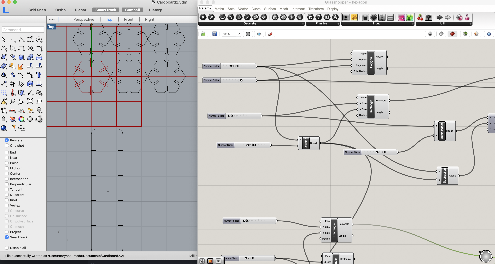
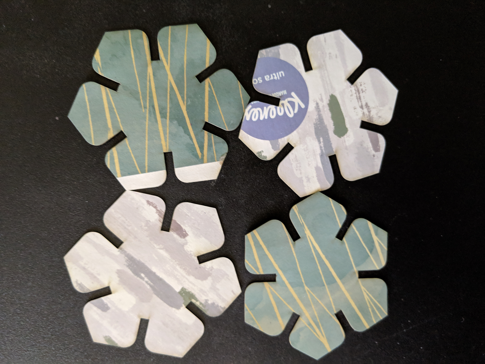
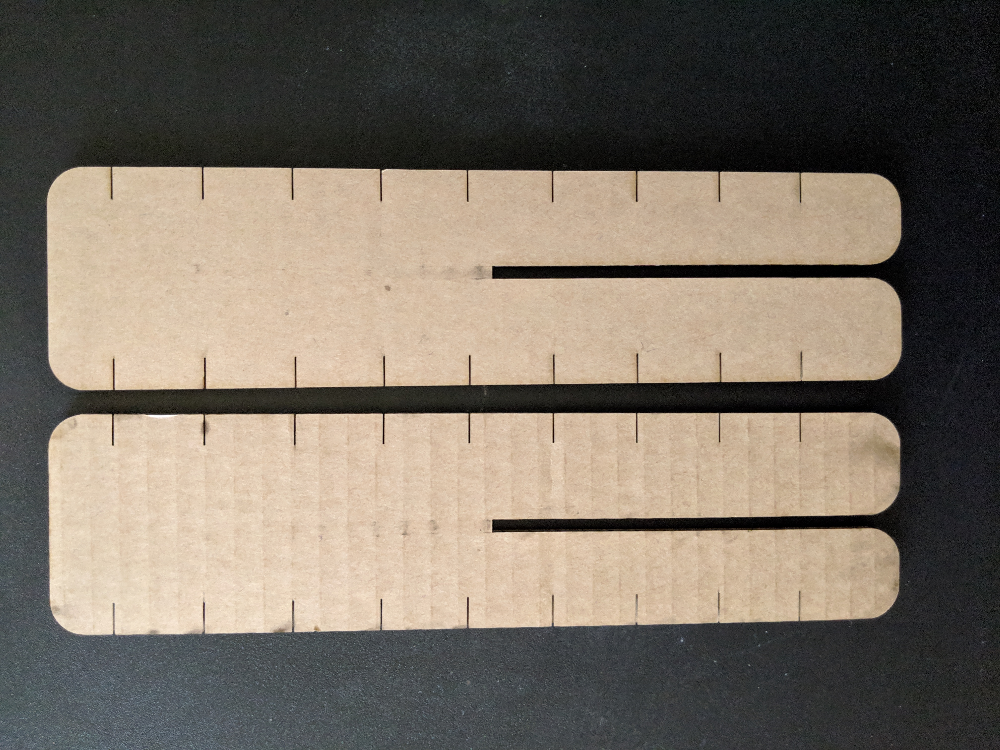
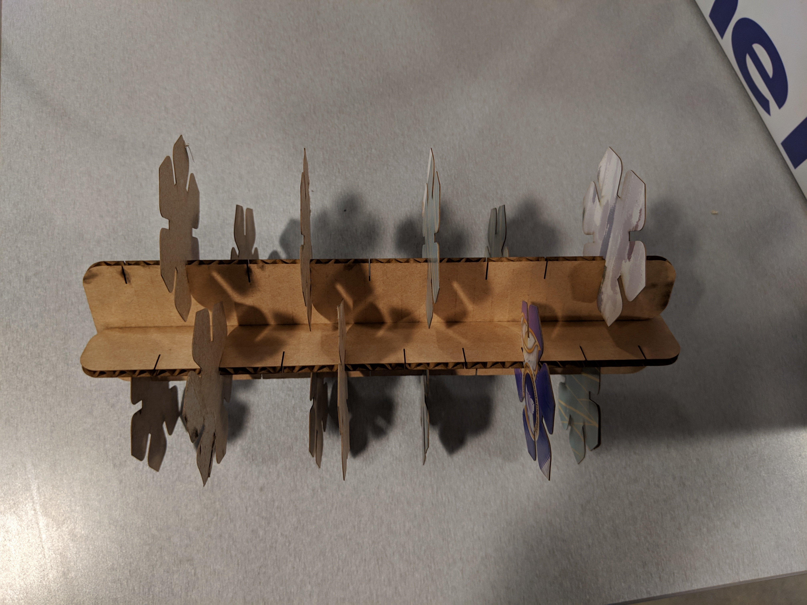

I started in grasshopper and rhino and created my shapes in grasshopper. Both of these tools are very unintuitive and I ended up Googling how to do everything. I wanted to make a pentagon, but when I tried to make the rectangles for slits they didn't align nicely. I ended up making hexagons instead and those worked out nicely. After I baked my shapes into rhino I used the fillet to round the edges. I also made an array of shapes because I thought I would be able to cut a lot at once.
I ended up using small kleenex boxes to have a thin cardboard and had to make my shapes one at a time because I was trying to avoid all the folds in the cardboard. I guessed and used the settings of 60 speed, 100 power, 50 frequency. This worked out really well so that's the one I used for all thinner pieces.
To cut out the based I used some of the cardboard that was left by someone else. It was much thicker and I used the settings I used last time 25 speed, 100 power, 50 frequency. It cut through nicely and I was able to slot them nicely with each other and with my hexagon shapes.
Here is the final product. It was interesting figuring out how to use rhino and grasshopper and I would like to explore making 3D shapes.